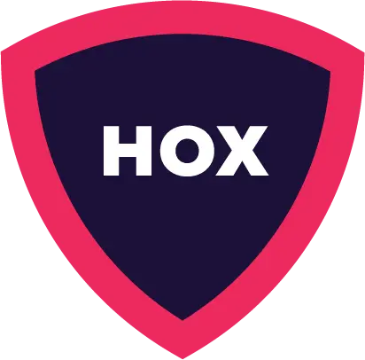
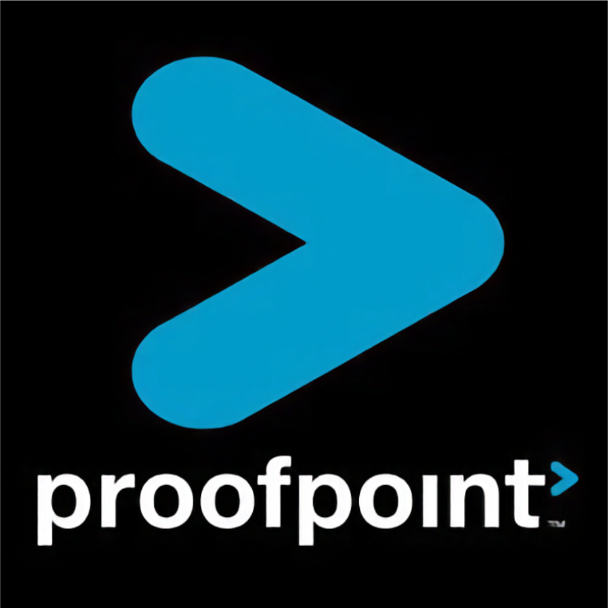
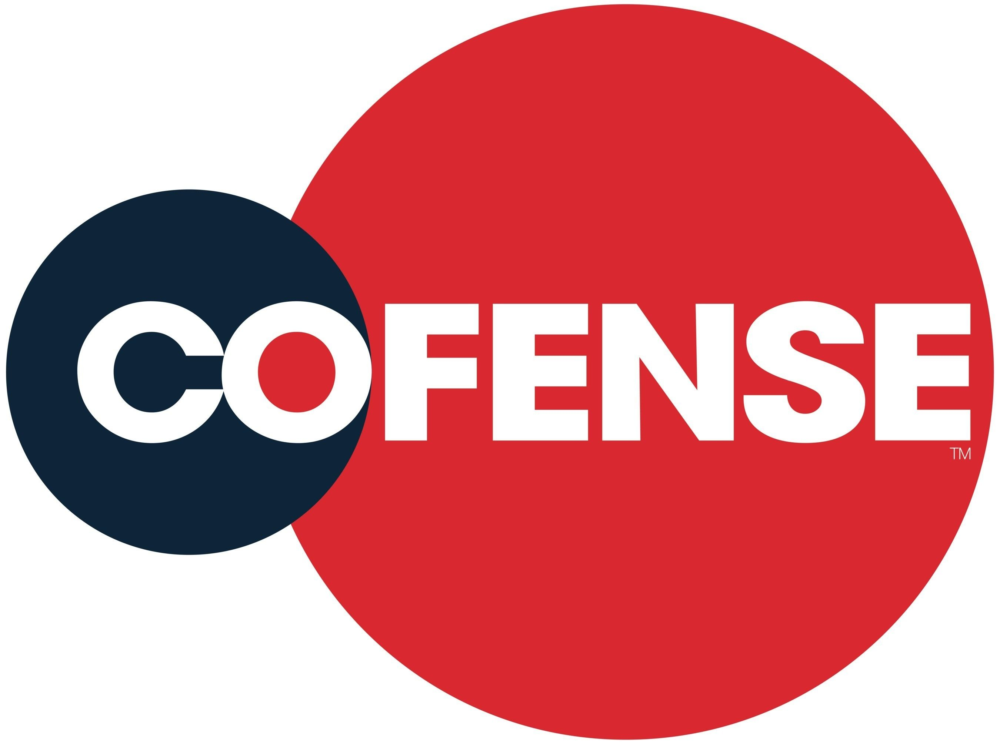

Proyecto 2: El eslabon mas debil
Plataformas de Simulacion de Phishing
Las paginas de simulacion de phishing, sirven como entrenamiento para los usuarios comunes de las redes sociales con poco o nulo conocimiento de la ciberdelincuencia y la ingenieria social
La importancia de estas paginas radica en que permiten ayudar a los usuarios con escenarios realistas mediante envio de correos simulados y evaluar su reaccion y proporcionando capacitacion para mejorar su entendimiento sobre estos ataques.
La tabla presente realiza una comparacion de multiples de estas paginas, describiendo sus características tecnicas, metricas utilizadas, enfoques de entrenamiento, etc..
Tabla Comparativa
| Plataforma | Métricas utilizadas | Enfoque de entrenamiento | Técnicas reales simuladas | Ventajas | Limitaciones |
|---|---|---|---|---|---|
 Hoxhunt |
Click Rate (usuarios que interactúan con el phishing), Reporting Rate (usuarios que reportan el correo sospechoso) y Human Risk Score que mide el nivel de riesgo de cada empleado según su comportamiento en las simulaciones. | Entrenamiento adaptativo basado en inteligencia artificial. El sistema ajusta automáticamente la dificultad de los ataques según el comportamiento de cada usuario. | Phishing corporativo, spear-phishing personalizado, correos que simulan servicios en la nube, notificaciones falsas de seguridad y solicitudes internas. | Alta personalización de ataques simulados, gamificación que incentiva el aprendizaje, retroalimentación inmediata al usuario. | Costo elevado para organizaciones pequeñas y dependencia fuerte de integraciones con correo corporativo. |
 Proofpoint |
Threat Response Rate, Click Rate, y métricas de susceptibilidad al phishing basadas en datos globales de amenazas detectadas por la empresa. | Capacitación basada en inteligencia de amenazas reales detectadas en su red de análisis de correos electrónicos. | Ataques de phishing masivo, campañas de malware, ingeniería social empresarial (BEC) y ataques basados en enlaces maliciosos. | Gran base de datos de amenazas reales, integración directa con soluciones de seguridad de correo. | Plataforma compleja de implementar y enfocada principalmente en empresas grandes. |
KnowBe4 |
Phish-Prone Percentage (PPP), Click Rate, Reporting Rate y métricas de progreso del usuario durante el programa de entrenamiento. | Programas estructurados de capacitación que combinan simulaciones de phishing con cursos, videos y evaluaciones. | Phishing tradicional, spear phishing, ataques de ingeniería social y simulaciones de credenciales falsas. | Amplia biblioteca de contenido educativo, fácil implementación, gran cantidad de plantillas de phishing. | Las simulaciones pueden ser predecibles si no se personalizan correctamente. |
 Cofense |
Click Rate, Reporting Rate y métricas de tiempo de respuesta en el reporte de correos sospechosos. | Entrenamiento centrado en el usuario como sensor humano de amenazas, fomentando el reporte de phishing. | Ataques BEC (Business Email Compromise), phishing corporativo y simulaciones basadas en ataques reales reportados por la comunidad. | Gran enfoque en respuesta a incidentes y colaboración entre usuarios y analistas. | Menor variedad de contenido educativo comparado con otras plataformas. |
Phished.io |
Employee Risk Score, Click Rate y métricas de comportamiento basadas en inteligencia artificial. | Entrenamiento completamente automatizado con algoritmos que adaptan las campañas según el comportamiento del usuario. | Phishing basado en credenciales, phishing de servicios en la nube y ataques de ingeniería social automatizados. | Automatización total del programa de phishing y análisis detallado del comportamiento del usuario. | Menor reconocimiento en el mercado y menor ecosistema de integraciones. |
NINJIO |
Métricas de finalización de cursos, evaluación del conocimiento y reducción de vulnerabilidad al phishing. | Aprendizaje basado en storytelling mediante episodios animados inspirados en ataques reales. | Simulaciones básicas de phishing, fraudes corporativos y escenarios de ingeniería social. | Contenido educativo atractivo y alto nivel de engagement de usuarios. | Menor enfoque en simulaciones técnicas comparado con otras plataformas. |
Mimecast |
Click Rate, Report Rate y métricas de exposición a amenazas dentro del ecosistema de correo electrónico. | Entrenamiento integrado con sistemas de seguridad de correo corporativo. | Phishing basado en enlaces, adjuntos maliciosos y ataques de ingeniería social por correo. | Integración directa con soluciones de protección de correo electrónico. | Menos contenido educativo comparado con plataformas especializadas en concienciación. |
Infosec Institute (Infosec IQ) |
Security Awareness Score, Click Rate y métricas de cumplimiento organizacional. | Programas educativos completos orientados a concienciación en seguridad y cumplimiento normativo. | Phishing tradicional, ataques de ingeniería social y simulaciones de credenciales comprometidas. | Amplia biblioteca de cursos de ciberseguridad y herramientas para cumplimiento. | Simulaciones de phishing menos avanzadas que otras plataformas especializadas. |
Conclusion
El uso de estas paginas debe de ser difundidas para que el publico tenga conocimientos sobre los tipos de ciberataques a los que estan expuestos, aparte de estar preparados para ellos y no ser victimas de uno.
La existencia de las paginas aumenta el conocimiento general sobre el phishing, aparte de que al capacitar a los usuarios sobre sus reacciones mejora la calidad de la enseñanza final hacia ellos.